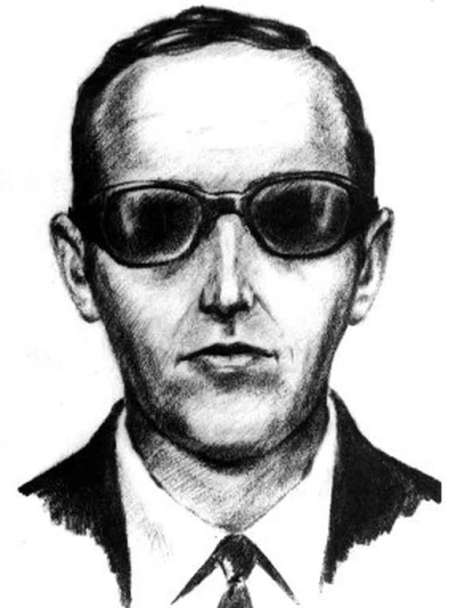
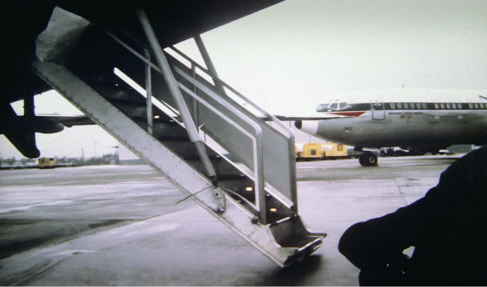

Dan Cooper's Case
November 24th, 1971
Northwest Orient Airlines Flight 305
From Portland
To Seattle
outline
사건명
댄 쿠퍼 사건
납치 항공편
노스웨스트 항공 305편
출발지
포틀랜드
목적지
시애틀
사건 발생지
시애틀 타코마 공항 - 리노 공항
범인
댄 쿠퍼(추정)
info
1971년 11월 24일, 추수감사절 전날, 정장 차림의 중년 남성

동명이인을 수사하면서 오기된 이름으로, 사실 범인이 댄 이름은 댄 쿠퍼(Dan Cooper)였다. 범인의 실명을 포함한 신원은 밝혀지지 않았다.
이 검은 넥타이, 선글라스, 서류가방을 들고 탑승한 뒤 승무원에게 “자신은 폭탄을 가지고 있으며 자신의 지시를 따르라."라는 쪽지를 조용히 건네고 다이너마이트 막대를 눈으로 확인시켜 주며 본격적으로 자신의 요구 사항을 밝혔다.범인은 거래 가능한 현금 20만 달러와 낙하산 4개, 비행기 연료 보급을 요구했다. 흥미로운 점은 댄 쿠퍼는 음주, 흡연과 더불어 승무원에게 예의 바르게 요구하며 굉장히 침착한 행동을 보였다는 점이다. 승무원과 기장은 곧바로 관제탑을 통해 경찰에 신고했고 경찰은 일단 범인의 요구 사항대로 현금과 낙하산을 조달하여 시애틀 공항에 대기했다.이후 비행기가 시애틀 타코마 공항에 착륙했고 FBI가 요구한 돈과 낙하산을 전달 후 승객들이 모두 풀려났다. 다시 비행기는 범인과 함께 승무원 몇 명을 남긴 채 리노 공항을 향해 이륙했고 범인은 기체 뒤쪽 계단

후미 계단은 객실 뒤쪽에서 지상으로 바로 내릴 수 있게 설계된 계단으로 초창기 제트 여객기 중 일부에만 달린 문이다.
을 통해 극악 조건
11월 말의 추위,폭우,강풍,밤,산악 지대라는 악조건이란 악조건은 다 갖춘 상태에서 낙하했다.
에서 낙하산을 메고 뛰어내렸다. 이후 행방이 사라졌으며 아직까지도 범인이 밝혀지지 않은 미제 사건으로 남게 되었다.

동명이인을 수사하면서 오기된 이름으로, 사실 범인이 댄 이름은 댄 쿠퍼(Dan Cooper)였다. 범인의 실명을 포함한 신원은 밝혀지지 않았다.

후미 계단은 객실 뒤쪽에서 지상으로 바로 내릴 수 있게 설계된 계단으로 초창기 제트 여객기 중 일부에만 달린 문이다.
11월 말의 추위,폭우,강풍,밤,산악 지대라는 악조건이란 악조건은 다 갖춘 상태에서 낙하했다.